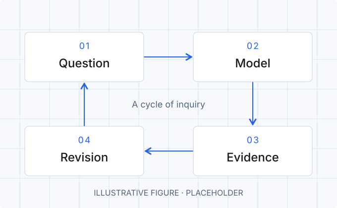

Abstract
This essay begins with a question: what makes an idea worth pursuing? The pages that follow sketch a possible way to move from curiosity to a clear argument, making room for evidence, uncertainty, and revision. The aim is a coherent thread that a reader can follow, with optional detours for ideas that deserve a closer look.
1. Introduction
An interesting question often arrives before a useful explanation. Something seems inconsistent, a familiar approach feels incomplete, or two observations resist being reconciled. That small gap is the starting point for this essay.
For this draft, imagine a central claim that can be stated in a sentence and examined from several directions. The introduction will establish why the question matters, define its scope, and explain what the argument asks the reader to consider.[1]
Rabbit holeWhat makes a useful question?
A brief detour into framing
Consider how the question changes when its boundaries change. A question about whether something can be built is different from a question about whether it should be built, or under which conditions it would be useful.
This space can hold a longer tangent, a definition, a historical aside, or a worked example. Closing it returns the reader to the main argument without a separate page.
2. A working framework
The argument will develop through a simple sequence: state the question, describe a model, examine the evidence, and revisit the original assumptions. Figure 1 offers an illustrative structure for that sequence.

Working assumptions
Before drawing conclusions, the draft will make its assumptions explicit. For example:
- Scope. Define the part of the problem the argument addresses.
- Evidence. Describe which observations would support or weaken the claim.
- Limits. Identify what remains unknown or outside the model.
Rabbit holeWhen a model leaves something out
A small thought experiment
Imagine two descriptions of the same system. One captures every component; the other captures only a few relationships. Which description helps depends on the question being asked. This tangent could explore that distinction without interrupting the main discussion.[2]
A detour can have its own references, lists, and figures. It can also point back to a figure in the main text.
3. Discussion
The discussion is where the claim meets its strongest objection. What alternative explanation would account for the same observations? Which part of the argument depends on an assumption that might fail? These questions will help distinguish a persuasive story from a defensible conclusion.
What would I need to observe to change my mind?
This is also a place to distinguish interpretation from evidence. The final version can compare competing explanations, connect the argument to earlier work, and describe the conditions under which its conclusions would change.
4. Conclusion
The essay will close by returning to its opening question. A useful ending should state what the argument establishes, acknowledge what it leaves unresolved, and suggest the next question worth asking.
For now, this draft is a place to begin.
Notes & references
Numbered notes collect sources and short asides in one place. These entries are examples, not actual sources.
- Source placeholder. Author surname, Given name. Title of the paper or book. Journal or publisher, year, pages. Add a DOI or source link here. ↩
- Explanatory note placeholder. Use this space for a qualification, a definition, or additional context. Longer tangents belong in an expandable rabbit hole beside the relevant passage. ↩